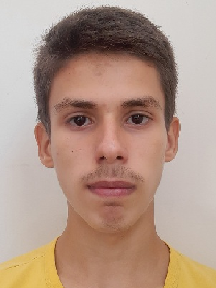

|  |
Chamo-me Alexandre Batista Leal, nasci em 27/09/2005, logo, tenho 17 anos de idade, moro com meus pais, Alexandre e Maria, e tenho um irmão com três anos a menos do que eu. No que diz respeito a minha pessoa aprecio muito as implicações da engenharia sobre o dia a dia das pessoas, embora eu não entenda muito de suas definições é um campo do meu interesse. |
Minhas experiências profissionais são limitadas ao meu âmbito familiar, sendo elas dentre a empresa de meus pais. A empresa trabalhando com a fabricação e distribuição de gelo, onde acompanho o processo de produção, entrega e manutenção.
Além disso, já pude acompanhar serviços em uma eletrônica, embora não tenha trabalhado com nenhum conserto de forma direta, agreguei conhecimentos práticos dentre a identificação de problemas em um cicuito elétrico, assim como a importância de manter uma estação de trabalho limpa e organizada, e os cuidados com o manuseio e operação com os equipamentos, da empresa, e do cliente, em vista não apenas de seus valores, mas também das responsabilidades com ambos.
Estou cursando o curso técnico em eletrotécnica no Instituto federal de educação, ciência e tecnologia desde 2021, sendo aluno do 5° período dentre seis.
Nos anos antriores a isso vivênciei ambos ambitôs, público e privado, de ensino, no entanto foram os dois últimos anos do ensino fundamental os mais marcantes, logo que tive amplo contato com elementos educacionais quanto plataformas digitais, programação e robótica.
Fora o âmbito escolar estou em processo de finalização de um curso de língua inglesa, com previsão de 3 meses para finalização e emissão de certificado.
Exige a instituição de ensino a qual estou vinculado, o cumprimento de 120 horas de estágio obrigatório, sendo este o príncipio do meu contato. Desta forma, espero poder contribuir com o desenvolvimento da Suprimed, e agregar conhecimentos e experiências à minha vida profissional e acadêmica.